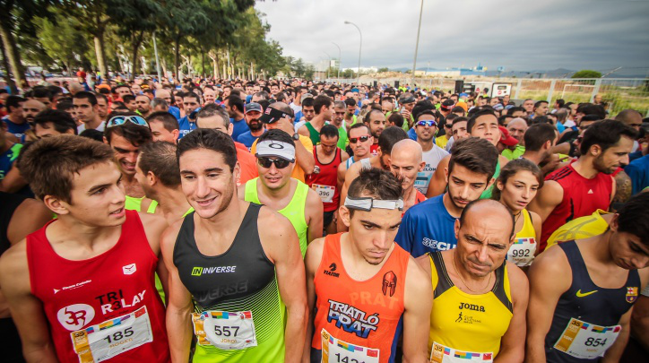
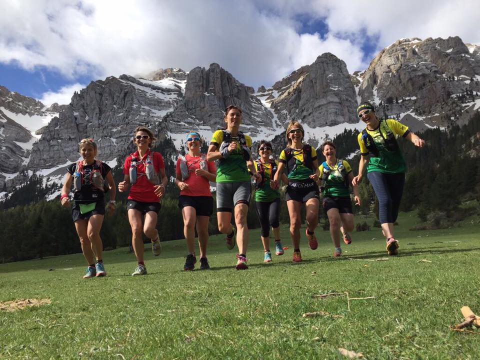
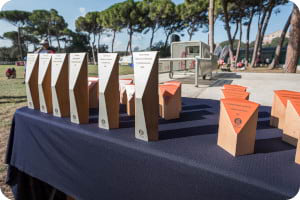

Sobre la Cursa Rodacaballs
La Cursa Rodacaballs és molt més que una cursa, és una experiència única que et connecta amb la natura salvatge i et desafia a superar els teus propis límits. Organitzada al cor de la Serra de Caballs, aquesta cursa combina esports, paisatges espectaculars i un ambient comunitari incomparable.
La Filosofia de la Cursa
El nostre objectiu és promoure un estil de vida actiu i saludable, respectant i posant en valor la riquesa natural i cultural de la Serra de Caballs. Cada participant forma part d’una comunitat que celebra l’esforç personal, el respecte pel medi ambient i la superació de nous desafiaments.
Modalitats i Nivells
- Trail de 10 km: Ideal per a corredors que s’inicien en el trail running.
- Trail de 20 km: Un repte per a corredors experimentats que volen posar a prova la seva resistència.

El Recorregut: Senders, Cims i Aventures
El recorregut de la Cursa Rodacaballs ha estat dissenyat per oferir una experiència inoblidable, passant per alguns dels llocs més emblemàtics de la Serra de Caballs.
Punts Clau del Recorregut
-
Sortida: Plaça del Bosc
La cursa comença al cor de la Serra, amb una sortida enèrgica envoltada de roures i pins. Els primers quilòmetres ofereixen un terreny suau per escalfar els músculs.
-
El Mirador de la Roca Llarga (Km 5)
Una parada obligatòria per gaudir de vistes panoràmiques de la vall i el riu Ebre. Puntuació d’avituallament: begudes isotòniques i fruita fresca.
-
El Pas del Vent (Km 10)
Un dels trams més espectaculars, amb un camí estret que serpenteja per la carena de la muntanya. La vista inclou camps d’oliveres, vinyes i pobles a l’horitzó.
-
L’Avenc de Caballs (Km 15 - Trail de 20 km)
Un punt mític on la llegenda diu que antigament s’amagaven tresors. Puntuació d’avituallament extra: snacks energètics i aigua fresca.
-
La Pujada dels Tres Pins (Km 18 - Trail de 20 km)
L’últim gran repte, amb una pujada empinada que posa a prova la resistència dels corredors. Es recompensa amb una baixada tècnica fins a la meta.
-
Arribada: Plaça del Cingle
Una celebració final amb música, menjar local i un ambient festiu.

Experiència al Participant
- Servei de Guarda-roba: Deixa les teves pertinences de forma segura a la zona habilitada.
- Trofeus i Regals: Medalles per als guanyadors de cada categoria i regals per a tots els participants.
- Activitats Paral·leles: Tallers de senderisme, activitats per a nens i un mercat de productes locals.

Edicions Anteriors
Cursa Rodacaballs 2024
La cursa comença al cor de la Serra, amb una sortida enèrgica envoltada de roures i pins. Els primers quilòmetres ofereixen un terreny suau per escalfar els músculs.
Una parada obligatòria per gaudir de vistes panoràmiques de la vall i el riu Ebre. Puntuació d’avituallament: begudes isotòniques i fruita fresca.
Un dels trams més espectaculars, amb un camí estret que serpenteja per la carena de la muntanya. La vista inclou camps d’oliveres, vinyes i pobles a l’horitzó.
Un punt mític on la llegenda diu que antigament s’amagaven tresors. Puntuació d’avituallament extra: snacks energètics i aigua fresca.
L’últim gran repte, amb una pujada empinada que posa a prova la resistència dels corredors. Es recompensa amb una baixada tècnica fins a la meta.
Una celebració final amb música, menjar local i un ambient festiu.
- Servei de Guarda-roba: Deixa les teves pertinences de forma segura a la zona habilitada.
- Trofeus i Regals: Medalles per als guanyadors de cada categoria i regals per a tots els participants.
- Activitats Paral·leles: Tallers de senderisme, activitats per a nens i un mercat de productes locals.
Edicions Anteriors
Cursa Rodacaballs 2024
L’edició del 2024 va ser un èxit rotund amb un total de 600 participants dividits en les modalitats següents:
- Trail 10 km: 350 participants
- Trail 20 km: 250 participants
El recorregut destacava per la inclusió del nou tram "Camí dels Olivers", que va oferir una experiència única amb vistes espectaculars i un desafiament tècnic afegit. Els corredors van elogiar la qualitat dels punts d’avituallament i l’ambient vibrant a l’arribada a la Plaça del Cingle.
Cursa Rodacaballs 2023
L’edició del 2023 va reunir 550 corredors. Aquesta edició es va caracteritzar per la introducció d’una modalitat nocturna, que va atreure nombrosos participants:
- Trail 10 km: 300 participants
- Trail 20 km (Nocturn): 250 participants
El recorregut nocturn va incloure "El Sender de les Llums", un tram il·luminat amb llums LED i llanternes frontals, que va convertir l’experiència en una aventura màgica. Malgrat la dificultat afegida, l’edició va rebre comentaris molt positius per la innovació i l’organització.
Cursa Rodacaballs 2022
La primera edició moderna de la Cursa Rodacaballs va ser una prova pilot amb 400 participants. Les modalitats van ser:
- Trail 10 km: 250 participants
- Trail 20 km: 150 participants
Aquesta edició va posar les bases de l’èxit actual, amb un recorregut senzill però pintoresc, que incloïa el tram "La Vall Amagada", amb paisatges verds i terrenys accessibles per a corredors de tots els nivells.
Conclusions i Apreciacions
Al llarg dels anys, la Cursa Rodacaballs ha demostrat ser un esdeveniment de referència per als amants del trail running, amb una organització que prioritza la seguretat, el respecte pel medi ambient i l’experiència única dels participants. Gràcies al suport dels voluntaris, patrocinadors i la comunitat local, la cursa continua creixent i innovant.
Estem emocionats per seguir compartint aquesta aventura amb vosaltres. Ens veiem a la pròxima edició!
No t’ho perdis! Apunta’t i viu la màgia de la Serra de Caballs a la Cursa Rodacaballs! 🐴